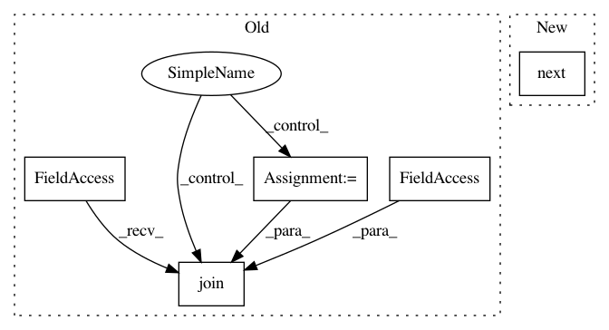

f2073333b710a340403843763ba60eb1e6699916,examples/data_process/tutorial_tfrecord2.py,,,#,81
Before Change
// sess.run(init)
tl.layers.initialize_global_variables(sess)
coord = tf.train.Coordinator()
threads = tf.train.start_queue_runners(sess=sess, coord=coord)
for i in range(3): // number of mini-batch (step)
print("Step %d" % i)
val, l = sess.run([img_batch, label_batch])
print(val.shape, l)
tl.visualize.images2d(val, second=1, saveable=False, name="batch" + str(i), dtype=np.uint8, fig_idx=2020121)
tl.vis.save_images(val, [2, 2], "_batch_%d.png" % i)
coord.request_stop()
coord.join(threads)
sess.close()
After Change
label_batch = tf.cast(features["label"], tf.int32)
yield img_batch, label_batch
img_batch, label_batch = next(read_and_decode("train.tfrecords"))
print("img_batch : %s" % img_batch.shape)
print("label_batch : %s" % label_batch.shape)
i = 0
In pattern: SUPERPATTERN
Frequency: 3
Non-data size: 5
Instances
Project Name: tensorlayer/tensorlayer
Commit Name: f2073333b710a340403843763ba60eb1e6699916
Time: 2019-04-11
Author: rundi_wu@pku.edu.cn
File Name: examples/data_process/tutorial_tfrecord2.py
Class Name:
Method Name:
Project Name: tensorlayer/tensorlayer
Commit Name: f2073333b710a340403843763ba60eb1e6699916
Time: 2019-04-11
Author: rundi_wu@pku.edu.cn
File Name: examples/data_process/tutorial_tfrecord.py
Class Name:
Method Name:
Project Name: pierluigiferrari/ssd_keras
Commit Name: 9573a66124f7d0b1b4ee42a7b7b9ac6acccc296f
Time: 2017-12-10
Author: pierluigi.ferrari@gmx.com
File Name: ssd_batch_generator.py
Class Name: BatchGenerator
Method Name: parse_csv